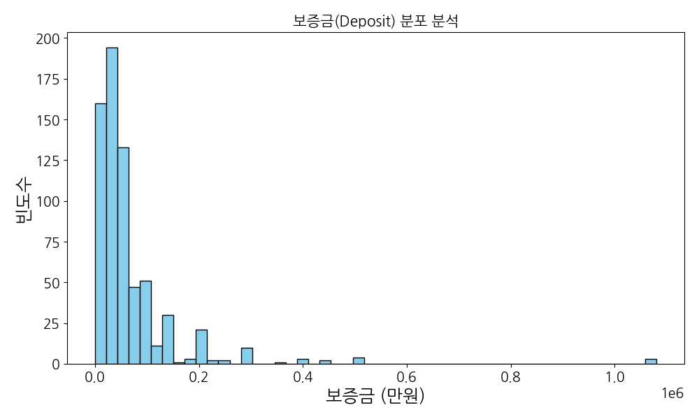
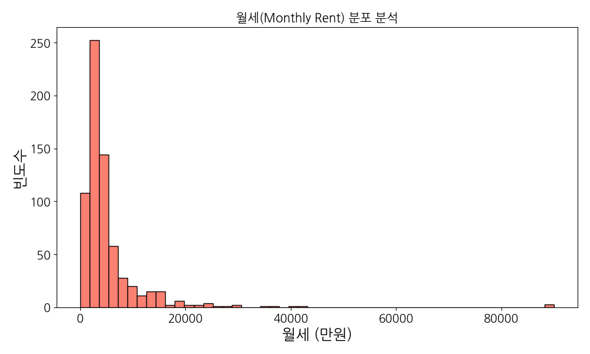
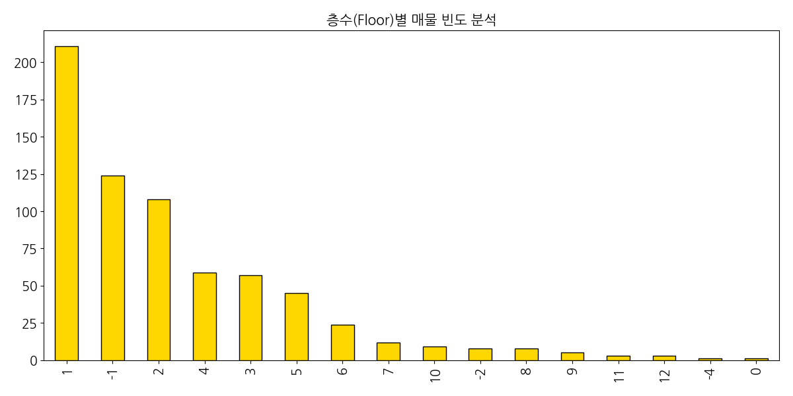
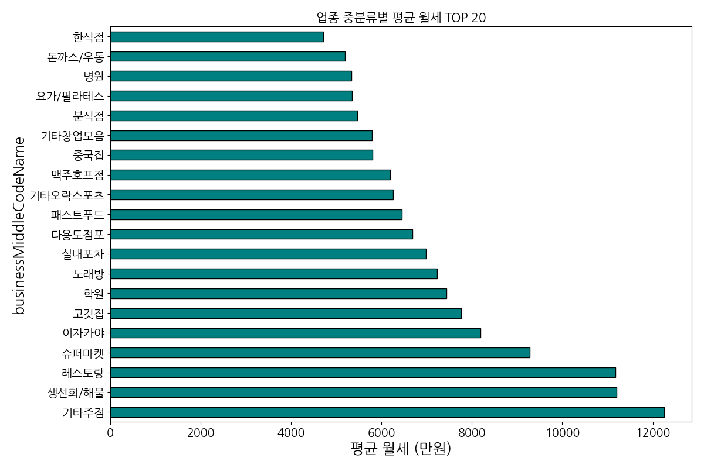
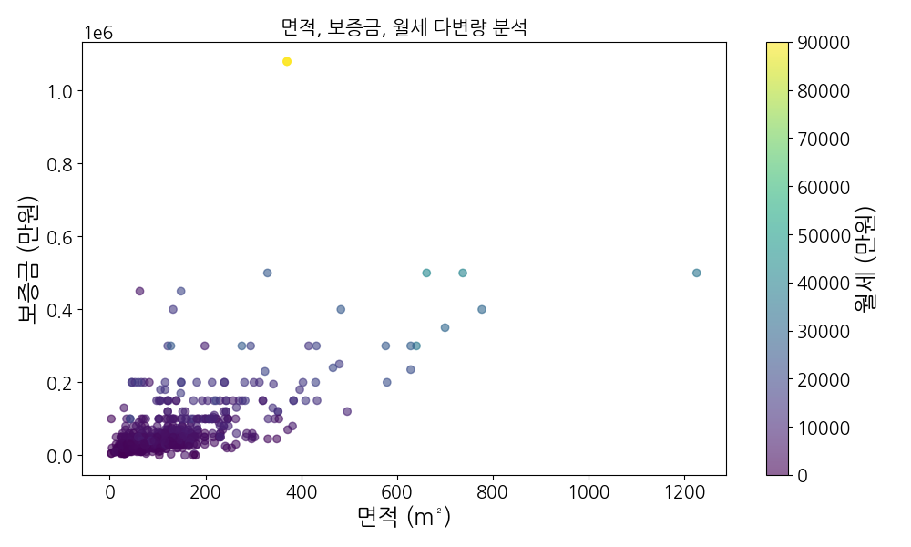
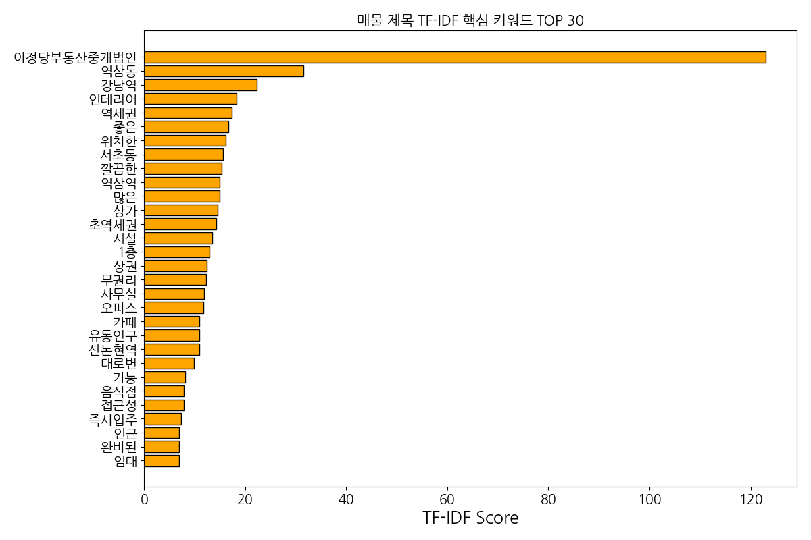
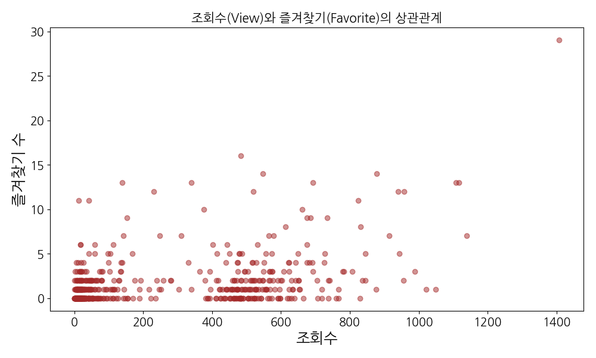

20년 경력 전문가가 분석한 상권 데이터 인사이트 대시보드





시장의 효율적 가격 체계와 공간 활용 전략
보증금과 월세는 0.95에 육박하는 강력한 양의 상관관계를 보입니다. 이는 상권 내 가격 거품이 적고 매우 효율적으로 책정된 시장임을 의미합니다. 데이터의 시각적 분포를 보면 면적이 커질수록 보증금과 월세가 기하급수적으로 상승하는 '제곱 비례'의 성격이 강하게 나타나고 있습니다. 따라서 수익성을 극대화하기 위해서는 단순히 넓은 공간을 확보하기보다, 단위 면적당 가치를 높일 수 있는 **'공간의 압축적 활용'**이 유일한 해법입니다.
20년 경력의 분석가 관점에서 볼 때, 이 그래프의 중앙 밀집 지역(Cluster)에서 벗어난 매물들에 주목해야 합니다. 면적 대비 보증금이 낮으면서 월세가 높은 매물은 초기 자본금이 부족한 창업자에게 기회가 될 수 있으며, 반대로 보증금이 높지만 월세가 현저히 낮은 매물은 장기적인 고정비 부담을 줄여 생존율을 높이는 전략적 선택지가 됩니다.


Nemo 부동산 상권 데이터를 통해 투영된 현재의 상업용 부동산 시장은 한마디로 '초양극화 속의 생존 전략 경쟁'이라 정의할 수 있습니다. 20년 전의 시장이 단순히 '좋은 자리에 앉으면 돈을 번다'는 지리적 결정론에 따랐다면, 지금의 데이터는 그 자리를 지탱하기 위한 비용 대비 매출 효율성이 얼마나 냉혹하게 계산되고 있는지를 보여줍니다.
보증금과 월세의 상관관계 분석에서 나타난 0.95에 육박하는 상관계수는 시장 가격이 매우 효율적으로 책정되어 있음을 의미합니다. 임대인들은 자신의 자산 가치를 1원이라도 낮게 평가하지 않으며, 임차인들은 그 비용을 감당하기 위해 더욱 공격적인 키워드로 고객을 유인하고 있습니다. '무권리', '인테리어 완비' 등의 키워드는 임차인들의 절박함과 동시에 새로운 진입자들에게 어필하려는 마케팅 포인트가 어디에 있는지를 정확히 짚어줍니다.
수치적 데이터와 범주형 데이터를 결합하여 도출한 성공의 공식은 '공간의 압축적 활용'입니다. 10~20평 내외의 1층 소형 점포들이 가장 높은 단위 면적당 효율성을 보이며 시장의 실질적인 주인공 역할을 하고 있습니다. 또한 권리금 데이터에서의 양극화는 기회이자 리스크입니다. 무권리 매물은 초기 진입 장벽을 낮춰주지만, 해당 자리가 '검증된 수익성'을 잃었을 가능성도 배제할 수 없습니다.
결론적으로, 이제 부동산은 발로 뛰기 전에 데이터로 먼저 선별해야 하는 시대입니다. 1%의 우량 매물은 이미 데이터상에서 조회수와 즐겨찾기로 그 존재감을 드러내고 있습니다. 본 대시보드가 제시하는 다각도의 상관관계와 시각화 자료를 자신의 비즈니스 모델에 대입해 보십시오. 데이터는 결코 거짓말을 하지 않습니다. 다만 그것을 읽어내는 통찰력이 결과를 바꿀 뿐입니다.